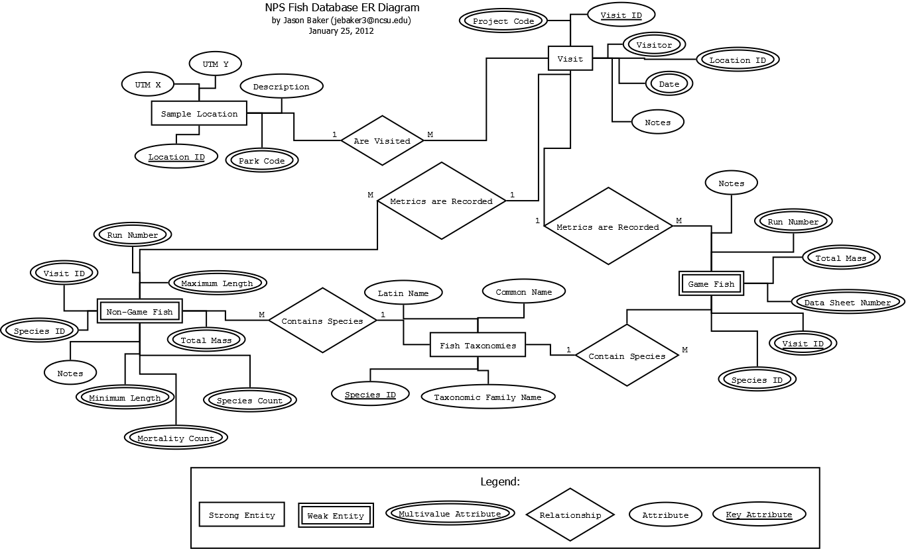
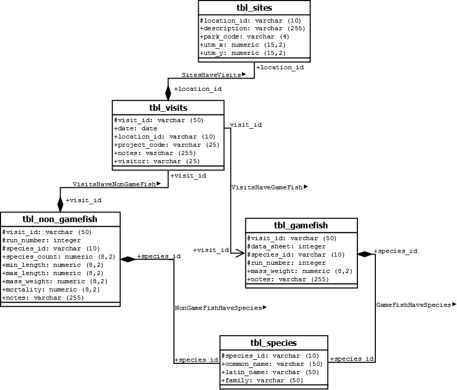

Database Design
We began our coursework with an introductory look at database
design, and developed an example project involving a fish sampling
database through several stages of the design process. We
first created an entity-relationship (ER) diagram to conceptually
describe our goal, followed by a unified modeling language (UML)
diagram. To assist in the design of these diagrams, we used an open
source computer aided software engineering (CASE) tool called
Dia. A script was then used
to generate data definition language (DDL) code from our diagram for
import into an actual database. Some illustration of these steps is
shown below.
Key Terminology
Primary Key: A primary
key is the first field which contains a unique entry in each row of
a table through which that record can be referenced; it allows for
establishing relationships between data stored in different tables
in a database.
Foreign Key: A foreign key is a field
which serves in a table as a reference to the primary key in a
different table, allowing an entry to link to a unique row in the
second table.
Referential Integrity: Referential integrity is
the principle that enforces the connection between primary and
foreign keys by requiring that a primary key exist in one table
corresponding to the foreign key that references it in another
table. Referential integrity ensures that no foreign keys exist
which reference a non-existent primary key.
Database Relationship: A database
relationships link tables together in a meaningful way. A
relationship may be one-to one, one-to-many, or many-to-many,
depending on whether or not a field may show up multiple times in
either the referring or the referenced table.
ER Diagram
The entity-relationship diagram, shown below, illustrates in conceptual terms the relationships between the different elements of our database model. In this model, we see the various components of each table illustrated as ovals connected to rectangles, and relationships between tables indicated as connected diamonds. Items with a double oval are keys, which means that they are values that we can either use singularly (simple keys) or in combination (composite keys) to refer to a unique value within the table and its associated properties. Simple keys are appropriate when every key corresponds to a unique value - when two or more keys are necessary to define a unique value, a composite key is necessary. We are also able to define the direction of the relationship, and the type, either one-to-one or one-to-many. Together these elements are referred to as the cardinality of the relationship.

(click to enlarge)
UML Diagram
From our ER diagram, we then proceeded to create a UML diagram of the same conceptual database. As you can see in the image below, the look of the image has changes somewhat, but we still preserve the relationships and their cardinality, and the keys are still defined. What has changed is that we have now given the elements of our design computer-friendly names that will be used in the actual code, and we have also defined the data types that we will use to represent each item in the appropriate table. Deciding the appropriate data type (strings, numbers, etc.) requires making decisions about not only how the data is best represented, but what actions you may wish to take on a piece of data within your program code. For example, numbers can be added and subtracted, but the same information represented as a string might be useful if we were trying to parse or concatenate it within a sentence.

(click to enlarge)
Data Definition Language (DDL)
Finally, we used a Perl-based script (available here) to convert from our UML diagram created in Dia to data definition language, which would allow us to set up our actual SQL database and then populate it with data. In this course, we used PostgreSQL for our database engine, but the same concepts apply to other database tools. The code generated from the above UML diagram is show below. Some minor modifications had to be made in order for the code to be valid for execution.
-- Parse::SQL::Dia
version 0.16
-- Documentation http://search.cpan.org/dist/Parse-Dia-SQL/
-- Environment Perl 5.012000, C:\strawberry\perl\bin\perl.exe
-- Architecture MSWin32-x86-multi-thread
-- Target Database postgres
-- Input file NPS_fish.dia
-- Generated at Wed Feb 1 13:26:37 2012
-- Typemap for postgres not found in input file
-- get_constraints_drop
--alter table tbl_visits drop constraint SitesHaveVisits ;
--alter table tbl_non_gamefish drop constraint
NonGameFishHaveSpecies ;
--alter table tbl_gamefish drop constraint GameFishHaveSpecies ;
--alter table tbl_non_gamefish drop constraint VisitsHaveNonGameFish
;
--alter table tbl_gamefish drop constraint VisitsHaveGameFish ;
-- get_permissions_drop
-- get_view_drop
-- get_schema_drop
--drop table tbl_sites;
--drop table tbl_species;
--drop table tbl_visits;
--drop table tbl_gamefish;
--drop table tbl_non_gamefish;
-- get_smallpackage_pre_sql
-- get_schema_create
create table tbl_sites (
location_id varchar (10) not null,
description varchar (255) ,
park_code varchar (4) ,
utm_x numeric (15,2) ,
utm_y numeric (15,2) ,
constraint pk_tbl_sites primary key (location_id)
) ;
create table tbl_species (
species_id varchar (10) not null,
common_name varchar (50) ,
latin_name varchar (50) ,
family varchar (50) ,
constraint pk_tbl_species primary key (species_id)
) ;
create table tbl_visits (
visit_id varchar (50) not null,
date date ,
location_id varchar (10) ,
project_code varchar (25) ,
notes varchar (255) ,
visitor varchar (25) ,
constraint pk_tbl_visits primary key (visit_id)
) ;
create table tbl_gamefish (
visit_id varchar (50) not null,
data_sheet integer not null,
species_id varchar (10) not null,
run_number integer not null,
mass_weight numeric (8,2) ,
notes varchar (255) ,
constraint pk_tbl_gamefish primary key
(visit_id,data_sheet,species_id,run_number)
) ;
create table tbl_non_gamefish (
visit_id varchar (50) not null,
run_number integer not null,
species_id varchar (10) not null,
species_count numeric (8,2) ,
min_length numeric (8,2) ,
max_length numeric (8,2) ,
mass_weight numeric (8,2) ,
mortality numeric (8,2) ,
notes varchar (255) ,
constraint pk_tbl_non_gamefish primary key
(visit_id,run_number,species_id)
) ;
-- get_view_create
-- get_permissions_create
-- get_inserts
-- get_smallpackage_post_sql
-- get_associations_create
alter table tbl_visits add constraint SitesHaveVisits
foreign key (location_id)
references tbl_sites (location_id) ;
alter table tbl_non_gamefish add constraint NonGameFishHaveSpecies
foreign key (species_id)
references tbl_species (species_id) ;
alter table tbl_gamefish add constraint GameFishHaveSpecies
foreign key (species_id)
references tbl_species (species_id) ;
alter table tbl_non_gamefish add constraint VisitsHaveNonGameFish
foreign key (visit_id)
references tbl_visits (visit_id) ;
alter table tbl_gamefish add constraint VisitsHaveGameFish
foreign key (visit_id)
references tbl_visits (visit_id) ;
We connected to our remotely-hosted database via a tool called PgAdmin III which enabled us to execute the code. The next step was to populate the tables. An example populated table can be seen on the SQL page on this site.
Reflection
While in a production environment I may not go through every step of the Entity-Relationship design process in such rigid detail as we did for this class, I think it is incredibly important to understand the meaning of relationships underlying database design. Unified Modeling Language and related CASE tools, however, I think are an incredibly useful tool for database design. Being able to visualize components in a way that makes components of a database design clear makes simple projects easier and larger projects possible. And without a clear visual understanding of how the database is designed, maintenance and modifcation in the future become significantly more difficult. Diagrams from CASE tools also make it much easier to communicate your system design with others who you may be collaborating with on a givne project. And while it was beyond the scope of this course, I look forward to extending my personal understanding of UML to be able to utilize it as a code generation tool for other languages which I may use in a GIS career, such as Java and Python.

{kind=link}
{kind=link}